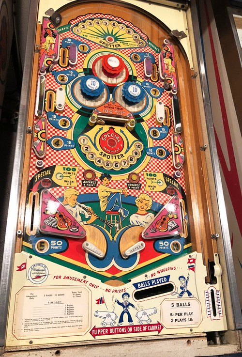

Collect numbers 1 through 10 around the playfield. 1 is the upper left side lane; 2 is the upper left standup target, most commonly hit off the left blue bumper; 3 is the middle left side lane; 4 is the side wall in the lower left; 5 is the left out lane. 6, 7, 8, 9, and 10 are in the same positions as 1, 2, 3, 4, and 5 respectively, but on the right side of the playfield. The lanes and targets corresponding to 1-4 and 6-9 always score 10 points; the out lanes score 50 or 100 when lit.
The red pop bumper and the two Advance rollover buttons above the flippers each score 1 point and move the selected number by 1 position. Pressing the Spotter rollover button at the top of the table or hitting the swinging target in the center will spot the currently selected number. Collecting all of 1-10 in a single game qualifies Special, which is always worth a free game. Advances also determine which of the two blue pop bumpers are lit for 10 points instead of 1, alternate whether the swinging target is lit for 100 points instead of 50, and cycle between having neither, one, or both of the out lanes lit for 100 points instead of 50.
When 1-10 are all collected, the top rollover button scores 100 points for the rest of the game, and the swinging target and out lanes will be constantly lit for 100 points unless they are lit for Special.
There are no in lanes. Flippers back up directly to the slingshots. Slingshot to out lane drains are remarkably common, so learn if you can which parts of the slingshot are the most dangerous and nudge accordingly. There is no center post, kickback, or gate feature. There is no end of ball bonus or extra ball feature. Tilt ends game.
The below picture of Ten Spot's playfield was taken from the Internet Pinball Database, where it was originally provided by Dan Fontes.
